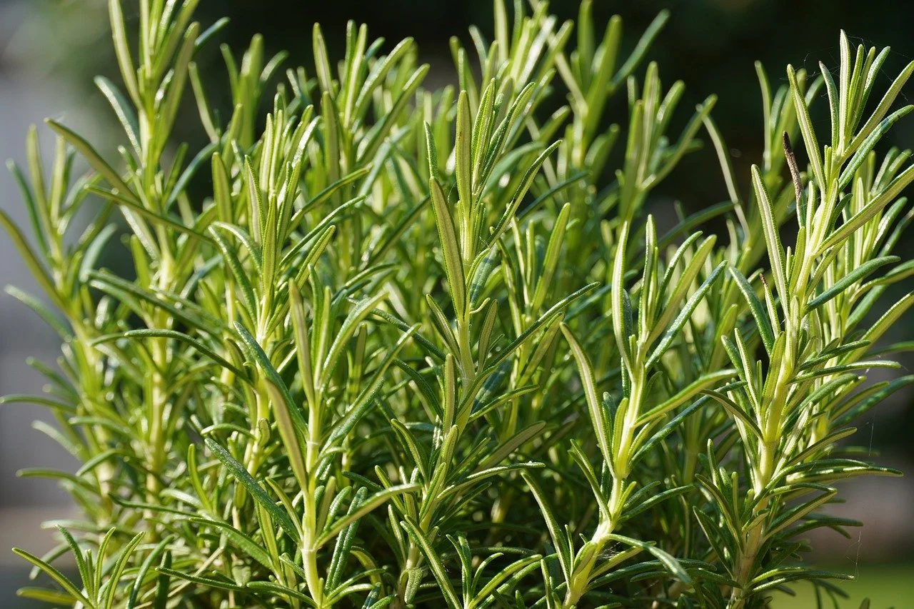
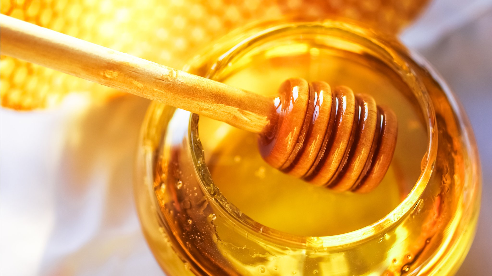
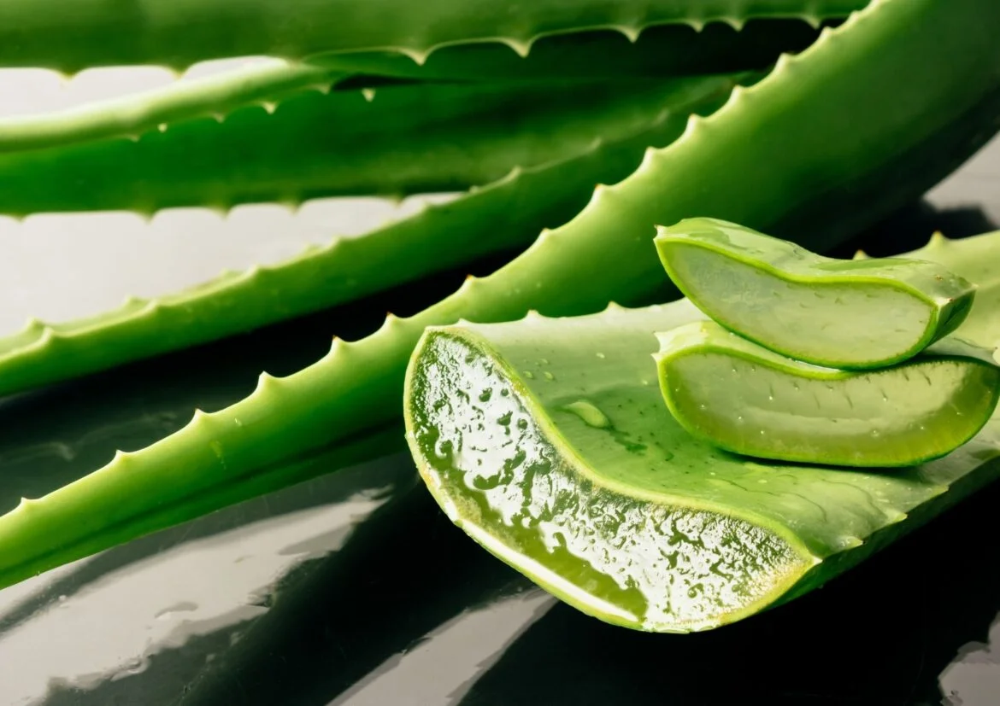
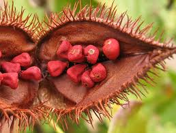
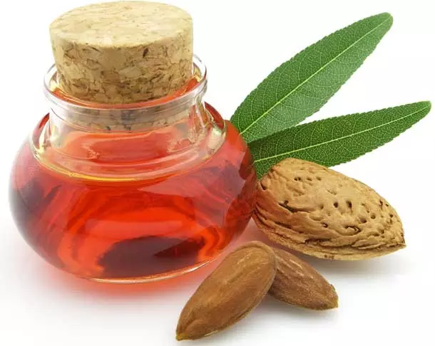
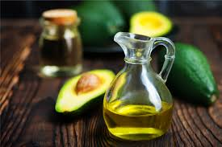
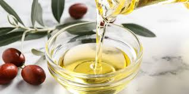
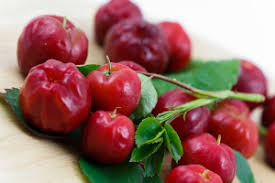

Por que desenvolver um protetor solar?
A radiação solar é indispensável para a vida na Terra, mas sua exposição em excesso pode ser prejudicial, podendo chegar a fauna marinha e desregular o sistema endócrino dos peixes. Criamos o Sun Flowers para protejer sua pele enquanto cuida do meio ambiente!
Objetivo
Oferecer proteção solar eficaz e sustentável, utilizando óleos naturais e ingredientes que respeitam a natureza.
Materiais
Sunflowers
Os girassóis são a inspiração por trás de nossa fórmula sustentável, representando a natureza, inovação e criatividade.
Camomila
Ao ser aplicada na pele, a camomila tem efeito calmante, hidratante e alivia vermelhidões.
Alecrim
É utilizado como estimulante da criculação perférica ou em tratamento para pele oleosa ou acneica. Ele também limpa, relaxa e refresca a pele.
Mel
Ele oferece inúmeros benefíicos para a pele, como o poder hidratante, calmante e a ação antioxidante. Além disso, ele tem propriedades cicatrizantes e estimula a produção de colágeno.
Calêndula
Aumenta o fluxo sanguineo da pele, a oxigenação e a chegada do snutrientes para o local aplicado será maior, favorecendo a hidrataçãp e a cicatrização da pele. É ótimo para peles rachadas, queimadas, secas e desidratadas.
Aloe Vera
É considerada antimicrobiana, antiviral e antiinflamatória. Possue vitaminas A, B, C e E, e com forte poder de cicatrização. Também é calmante e proporciona sansação de alívio na pele.
Urucum
O urucum é um protetor solar natural! Seus carotenoides formam uma barreira contra os raios UV, ajudando a prevenir queimaduras solares e o desenvolvimento de manchas.
Óleos de amêndoas doce
Com propriedades calmantes e emolientes, o óleo de amêndoas doces alivia irritações, vermelhidão e coceira, sendo perfeito para peles sensíveis e agredidas.
Óleos vegetal de abacate
Versátil e nutritivo, o óleo de abacate é ideal para todos os tipos de pele. Hidrata, regenera, protege e ainda ajuda a tratar condições como eczema e psoríase.
Óleos vegetal da macadâmia
Rico em antioxidantes, o óleo de macadâmia combate os radicais livres e ajuda a reparar os danos causados pelo sol. Além de hidratar, ele protege a pele e promove um bronzeado mais uniforme.
Óleos vegetal de Jojoba
O óleo de jojoba, com sua composição similar ao sebo natural da pele, forma uma barreira protetora que ajuda a reter a umidade e oferece uma leve proteção contra os raios solares.
Semente de Acerola
O extrato glicólico de acerola é um poderoso antioxidante natural, rico em vitamina C. Além de proteger a pele do sol, o extrato de acerola possui ação clareadora, ajudando a reduzir manchas e uniformizar o tom da pele.
óleo de coco
Com propriedades antibacterianas e antifúngicas, o óleo de coco ajuda a combater a acne, eczema e outras inflamações da pele, promovendo uma aparência mais saudável.
Sepigel
O Sepigel é um ingrediente chave em diversas formulações cosméticas, desde cremes até géis. Sua versatilidade permite a criação de produtos inovadores e com alta performance. A empresa demonstra um forte compromisso com a sustentabilidade e a preservação do meio ambiente.
Nipaguard
O Nipaguard é um conservante amplamente utilizado em cosméticos, oferecendo proteção contra a proliferação de microrganismos. Algumas formulações de Nipaguard são consideradas mais naturais e biodegradáveis, tornando-as uma opção mais sustentável para produtos cosméticos.
Sobre Nós
Inspirados pela natureza, trabalhamos para criar produtos que unem eficácia e sustentabilidade.
Contato
Entre em contato: contato@sunflowers.com